Spark SQL前世今生
为什么需要SQL
- 事实上的标准-关系型数据库已经存在多年，sql的应用对于大数据开发人员很方便
- 易学易用-SQL的门槛比较低，几天就可上手
- 受众面大
Shark
(Shark已经停止维护；不建议生产使用)
- Hive on Spark
Hive: 类似于sql的Hive QL语言， sql==>mapreduce
特点：mapreduce
改进：hive on tez、hive on spark、hive on mapreduce - Shark特性
Spark: hive on spark ==> shark(hive on spark)
shark推出：欢迎， 基于spark、基于内存的列式存储、与hive能够兼容
缺点：hive ql的解析、逻辑执行计划生成、执行计划的优化是依赖于hive的，仅仅只是把物理执行计划从mr作业替换成spark作业 - 缺点
Shark终止（2014-7）
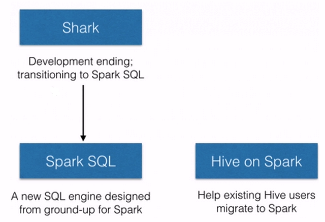
Shark终止以后，产生了2个分支：
1）hive on spark
Hive社区，源码是在Hive中
2）Spark SQL
Spark社区，源码是在Spark中
支持多种数据源，多种优化技术，扩展性好很多
SQL on Hadoop常用框架
- Hive
sql ==> mapreduce
metastore ： 元数据
sql：database、table、view
facebook开源 - impala
cloudera ： cdh（建议大家在生产上使用的hadoop系列版本）、cm
sql：自己的守护进程执行的，非mr
基于内存(metastore)运行 - presto
facebook开源
京东
sql
基于内存(metastore)运行 - drill
sql
直接访问：hdfs、rdbms、json、hbase、mongodb、s3、hive - Spark SQL
sql
dataframe/dataset api
metastore
访问：hdfs、rdbms、json、hbase、mongodb、s3、hive ==> 外部数据源
Spark SQL概述
官网翻译：
Spark SQL是Apache Spark用于处理结构化数据的模块。
- 集成
results = spark.sql(
“SELECT * FROM people”)
names = results.map(lambda p: p.name)
将SQL查询与Spark程序无缝混合。
Spark SQL允许您使用SQL或熟悉的DataFrame API在Spark程序中查询结构化数据。可用于Java、Scala、Python和R。
- 统一数据访问
spark.read.json(“s3n://…”)
.registerTempTable(“json”)
results = spark.sql(
“””SELECT *
FROM people
JOIN json …”””)
以相同方式连接到任何数据源。
DataFrames和SQL提供了访问各种数据源的常用方法，包括Hive，Avro，Parquet，ORC，JSON和JDBC。您甚至可以跨这些来源加入数据。
Hive集成
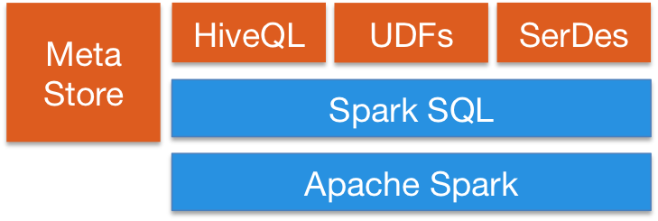
在现有仓库上运行SQL或HiveQL查询。
Spark SQL支持HiveQL语法以及Hive SerDes和UDF，允许您访问现有的Hive仓库。标准连接
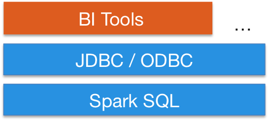
通过JDBC或ODBC连接。
服务器模式为商业智能工具提供行业标准JDBC和ODBC连接。
个人总结:
有见到SQL字样吗？
Spark SQL它不仅仅有访问或者操作SQL的功能，还提供了其他的非常丰富的操作：外部数据源、优化
Spark1.0(2014年4月)以来的部分核心发行版
下图是Spark SQL参与开发（左图）和提交次数统计（右图）
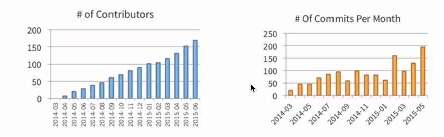
Spark从1.3从Alpha版本毕业；正式投入生产环境使用
（Alpha版本的框架不建议在生产环境使用；因为还未成熟）运行SQL/Hive QL查询，包括UDFs UDAFs和SerDes
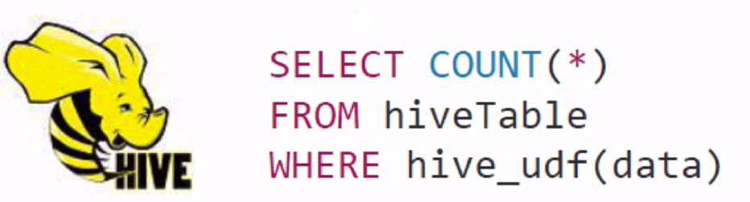Spark通过JDBC连接现有的BI工具
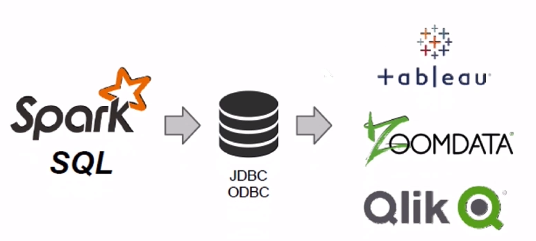支持Python，Scaka，Java，R
Spark SQL概述小结：
1）Spark SQL的应用并不局限于SQL。
2）访问hive、json、parquet等文件的数据。
3）SQL只是Spark SQL的一个功能而已；===> Spark SQL这个名字起的并不恰当。
4）Spark SQL提供了SQL的api、DataFrame和Dataset的API。
Spark SQL架构
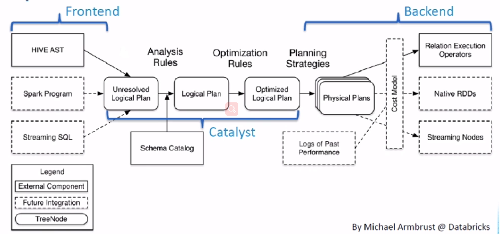
只要是基于SQL，它的大概流程都是上图所示
上图翻译：
可大致分为三部分： 前端、催化剂（Catalyst）、后端
- 前端：可以有不同种的访问方式；典型的Hive，其他的Spark应用程序，流和SQL的综合使用。
- 催化剂（Catalyst）：前端的东西过来后并不会直接生成执行计划，和metastore 中的Schema表信息进行整合生成最原始的逻辑执行计划，然后通过各种优化生成优化后的逻辑执行计划。
- 后端：进入物理执行计划（Spark作业），然后运行。
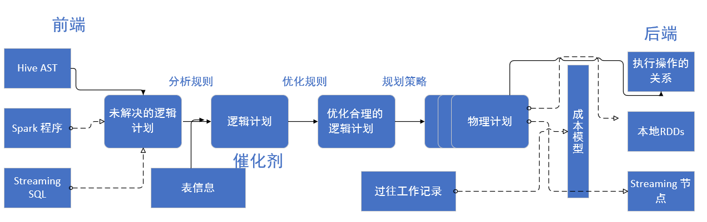
Spark SQL愿景
写更少的代码
代码量和可读性
Hadoop的Mapreduce VS spark的RDD
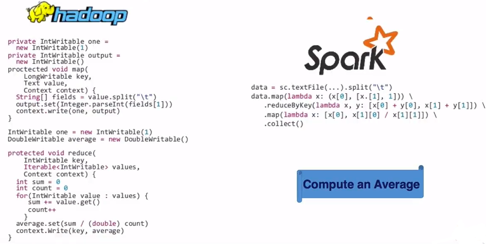
RDD VS DataFrames
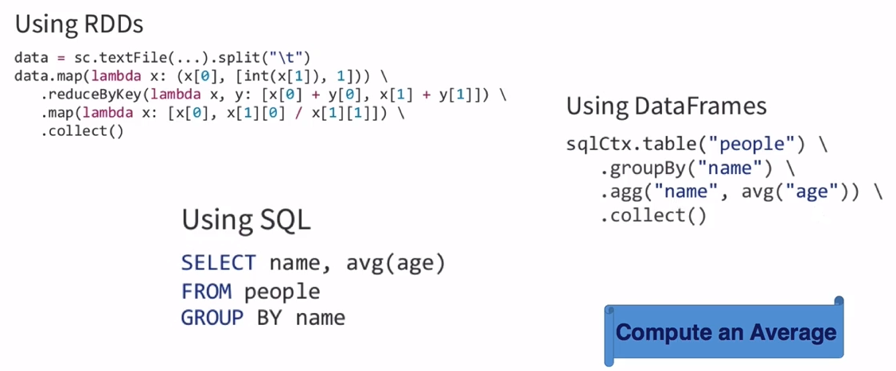
统一访问操作接口
统一接口，以各种格式读写数据
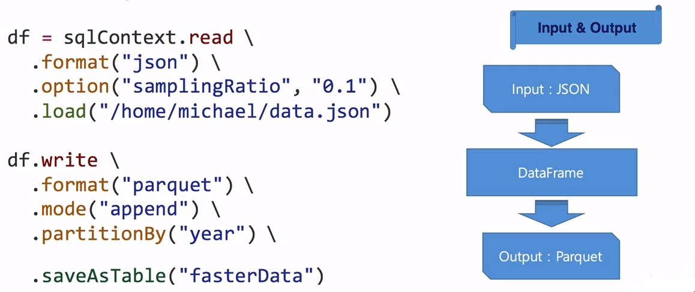
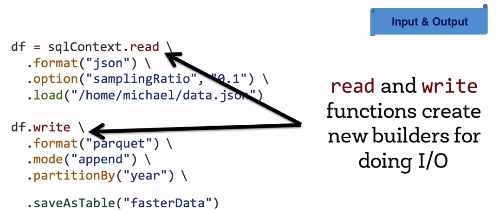
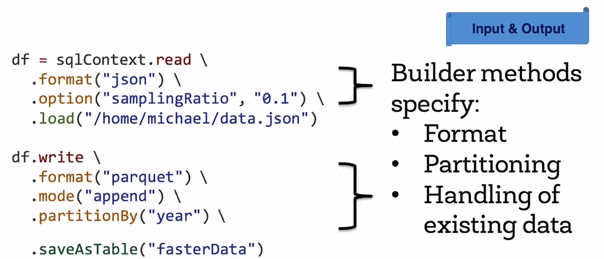
Spark ETL使用自定义数据源案例（加载JIRA数据源）
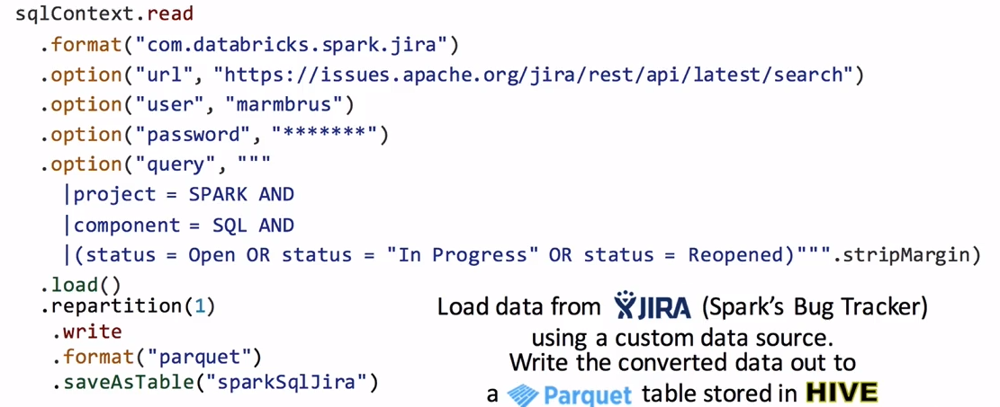
强有力的API支持
使用DataFrame函数简洁地解决常见问题:
A.选择所需列
B.连接不同的数据源
C.汇总(计数、总和、平均等)
d .过滤
E. ……
使用API建议到源码中去查询
Schema推导
模式推理:
A. 大数据往往很脏（需要进行处理；把脏数据剔除）
B. 从半结构化数据(即JSON)推断模式
C. 合并模式的不同但兼容的版本(例如JSON，Parquet)
（json格式对于存储和传输都是有一定的开销的；建议转换为列式存储结构比如Parquet）
推导示例：
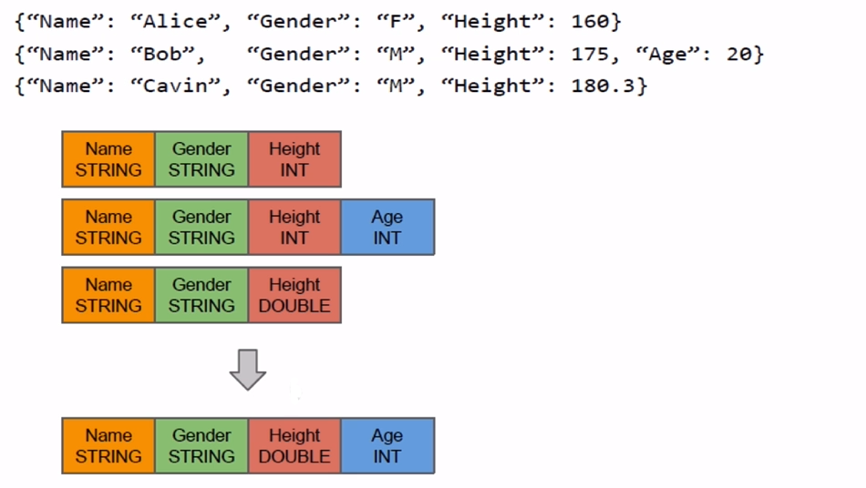
Schema Merge
转向官方链接（因为比较耗性能这个功能是默认关闭的）：
http://spark.apache.org/docs/latest/sql-data-sources-parquet.html#schema-merging
Partition Discovery
自动分区发现(Parquet)
A. 发现hive式分区表目录布局
B. 从分区目录路径推断分区列类型和值
转向官方链接
http://spark.apache.org/docs/latest/sql-data-sources-parquet.html#partition-discovery
执行速度更快
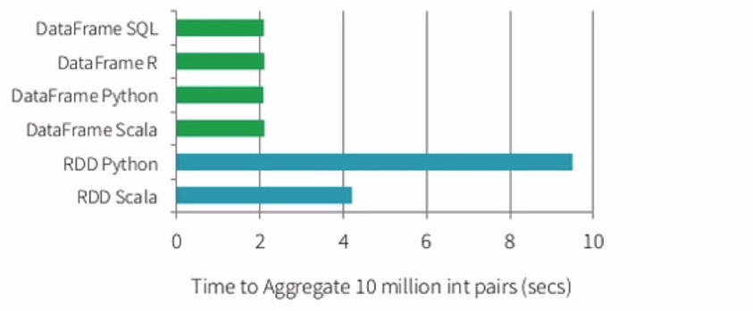
- 为什么Python RDD慢？
因为Python的VM和JVM需要大量数据的跨越进程交换，所以最慢。 - 为什么SQL,R,python,Scala的DataFrame操作速度都是一样的？
是因为DataFrame仅仅是封装的一个逻辑执行计划，然后这个逻辑执行计划交由SparkSQL的Catalyst来完成做各种优化。 - 为什么RDD的API要比DataFrame慢？
因为RDD是行数式的，而且它强调性的是不可变性。在大部分情况下它都是创建一个新对象而不是去修改一个老对象，所以就导致Spark应用程序创建很多个对象，GC压力大，性能差。
DataFrame的原则是尽可能使用已有对象。虽然打破了不可变性，但是再将数据返回给用户的时候它还会转成不可变的对象。
SparkSQL愿景之二读取更少的数据
处理大数据的最快方式就是忽略它;
Spark SQL可以帮助您自动读取更少的数据:
- 使用columnar formats【列式存储】(比如parquet)-==使用的时候仅仅去扫描需要的列。
- 使用partitioning pruning【分区裁剪】(比如/year=2014/month=02/…)仅仅会去查询02月份的数据，忽略不需要的数据。
- 底层有最小/最大统计数据的统计，这些存在了一个索引里。当我们发送查询的时候，索引已有结果的查询就会直接给出答案，跳过了数据和查询逻辑。
- 将predicates【条件】下压到数据源，从数据源端就过滤掉不需要的数据。（谓词下压）（比如JDBC）
- 节省了空间
A. 特定类型编码
B. 柱状布局压缩效果更好 - 使更好的扫描
A. 只加载需要访问的列;
B. 将IO限制为实际需要的数据
行式存储与列式存储
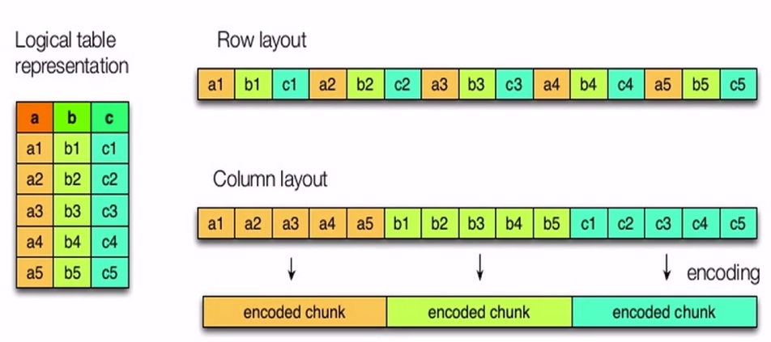
SparkSQL愿景之三让查询优化器帮助我们优化执行效率
让优化器做艰苦的工作
案例一
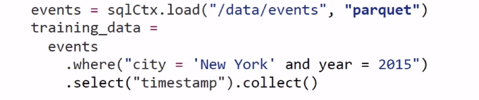
优化器如何对上图代码进行优化的？
见下图所示：
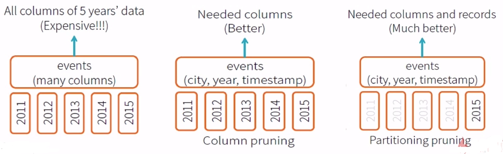
左图：数据全部加载
中图：只加载需要的列，但是所有年份的列都加载了
右图：只加载2015的所需要的列
案例二
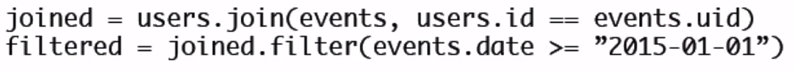
优化器如何对上图代码进行优化的？
见下图所示：
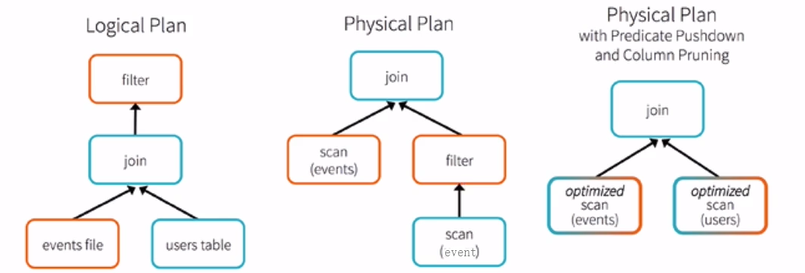
左图：最原始的逻辑执行计划，数据全部做join
中图：将event过滤后再与users进行join操作
右图：谓词下压，列裁剪，将条件下压源数据中，读取的时候就已经过滤，然后在进行join操作。
DataFrame内部
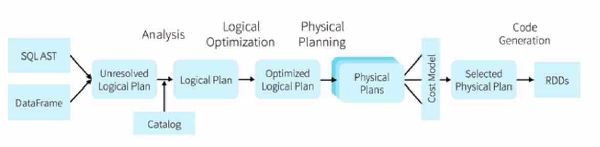
A. 内部表示为“逻辑计划”
B. 执行是惰性的，允许催化剂(Catalyst)对其进行优化
DataFrames和SQL共享同一个优化/执行管道
总结
SparkSQL更快地创建和运行Spark程序
A.编写更少的代码
B.读取更少的数据
C.让优化器做艰苦的工作
【为了达成这三点1.3提出了DataFrame】